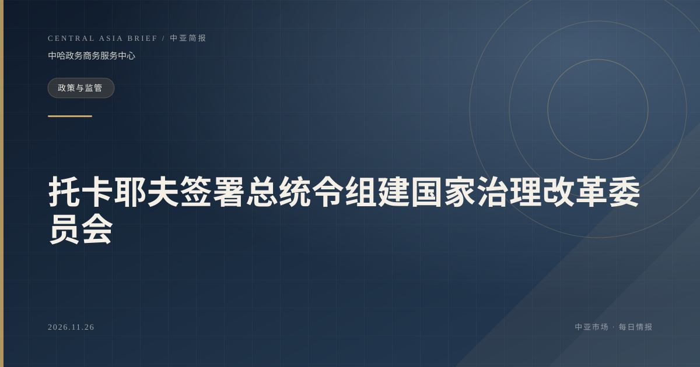

总统令批准国家治理改革问题委员会组成人员，工业与建设部长同日被免职，治理架构与人事同步调整。

今日要点
治理改革机构落地
哈萨克斯坦总统托卡耶夫签署总统令，批准国家治理改革问题委员会的组成人员 [9]。该总统令为委员会的人员配置提供了正式依据，但来源未披露委员会的具体职权范围、工作机制与时间表。
同日，托卡耶夫签署总统令，解除纳加斯帕耶夫·叶尔赛因·凯尔加济耶维奇工业与建设部部长职务 [38]。来源未说明免职原因及继任安排，涉及建筑、工业领域审批与项目对接的企业需关注该部人事与政策连续性。
数据安全监管升温
哈萨克斯坦国家安全委员会与数字部正在调查一起事件：有卖家在暗网挂牌出售据称属于哈国政府机构的数据库，涉及数百万公民个人数据 [34][35]。数字部已就此事作出回应 [35]。
调查仍在进行，来源未确认数据泄露的真实规模与责任主体。对在哈处理员工或客户个人信息的中资企业而言，数据合规与本地存储要求的执行力度值得跟踪，具体义务应以官方最新规定和专业顾问意见为准。
数字与AI合作议程
托卡耶夫在莫斯科与普京会谈时表示，哈萨克斯坦在数字化方面取得进展，双方讨论了人工智能、数字化及经贸合作，双边贸易额接近 300 亿美元 [4][15]。相关表态出现在 AI Journey 2026 会议前的克里姆林宫会晤中 [4]。
上述内容为双边合作方向的政治表态，来源未提及任何具体监管规则、许可安排或税收优惠。企业不宜将其直接理解为准入条件的变化。
其他监管动向
哈国议员提出研究全面禁止能量饮料生产、进口与销售的可能性 [24]，目前处于提议阶段，尚未形成法案文本。
阿拉木图公用事业账单中燃气费率栏目消失，媒体就计费方式提出疑问 [25]，来源未给出官方解释。涉及公用事业成本核算的企业应以当地官方口径为准。
对企业意味着什么
- 国家治理改革委员会的职能与授权尚不明确，建议在哈项目方持续跟踪其后续文件，判断审批链条是否调整。
- 工业与建设部换人后，建筑与工业项目的许可节奏可能出现短期波动，宜预留审批时间并确认对接口径。
- 数据泄露调查提示个人信息监管趋严，处理哈国公民数据的企业应提前自查合规，以官方规定和专业顾问意见为准。
- 能量饮料禁令仅为议员提议，尚未立法，相关贸易企业不必立即调整，但应保持关注。
信息来源
- [4] The Astana Times — Tokayev, Putin Focus on AI Cooperation as Bilateral Trade Nears $30 Billion · 2026.11.26
- [9] 哈通社 — 托卡耶夫签署总统令 批准国家治理改革问题委员会组成人员 · 2026.11.26
- [15] Kursiv — Токаев рассказал Путину об успехах Казахстана в цифровизации · 2026.11.25
- [24] Tengrinews · English — Kazakh lawmaker proposes complete ban on energy drinks · 2026.11.25
- [25] Tengrinews — В квитанциях за комуслуги в Алматы исчез тариф на газ. Почему и как платить? · 2026.11.25
- [34] Tengrinews · English — NSC and Digital Ministry investigate dark web listing offering Kazakhstanis’ data for sale · 2026.11.24
- [35] Tengrinews · English — Kazakhstanis’ data leaked on the dark web: what the Digital Ministry says · 2026.11.24
- [38] Akorda — Указом Главы государства Нагаспаев Ерсайын Каиргазиевич освобожден от должности Министра промышленности и строительства Республики Казахстан · 2026.11.24
本文由中哈政务商务服务中心编辑部基于公开来源整理，引用编号对应文末信息来源；仅作一般性信息参考，不构成法律、税务或投资建议。 涉及具体政策、费率与许可要求，请以哈萨克斯坦官方最新规定及持牌专业机构意见为准。